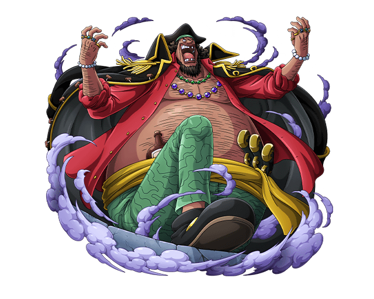
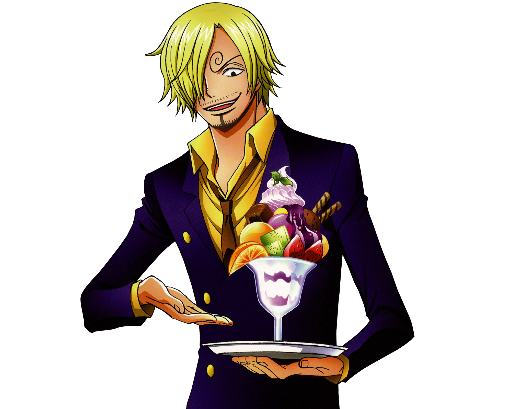
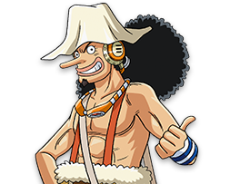

Importantes
Piratas
Monkey D. Luffy

Gol D. Roger

Barbablanca

Kaido

Big Mom

Barbanegra
Shanks

Gobierno
- Otros

Protagonistas
| Monkey D. Luffy |
||
|---|---|---|
| Zoro |
Sanji  |
Franky |
| Nami |
Robin |
|
| Brook |
Chopper |
|
| Usopp  |
Jinbei |
|
| Boat |
||